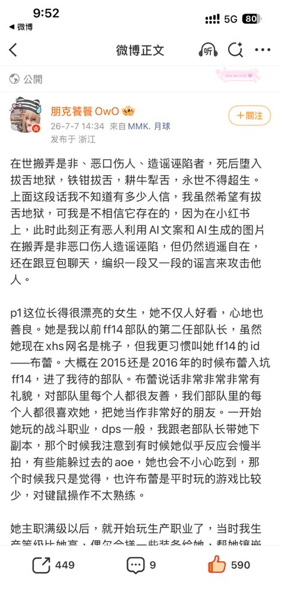
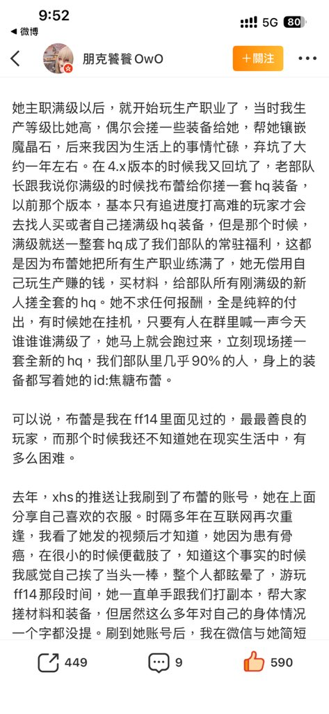
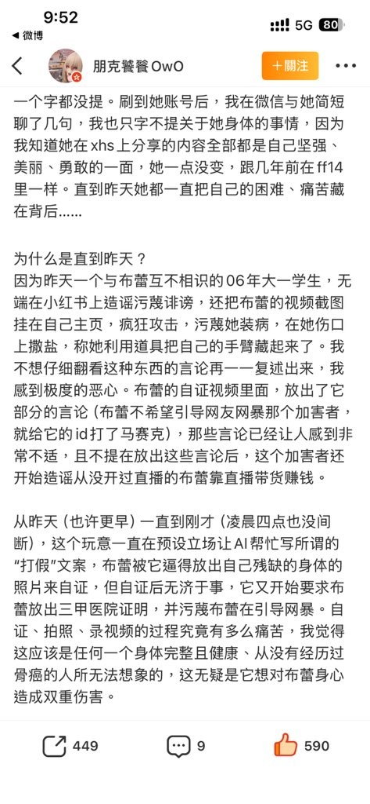
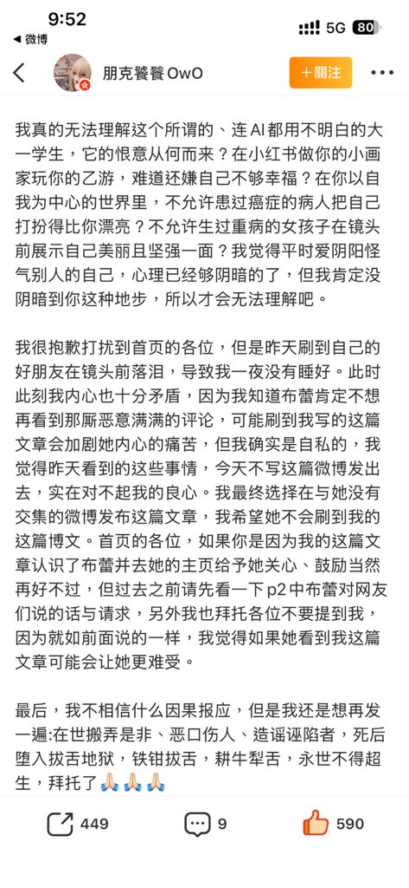

妃宫千早
@neko0202002
坏人是不分性别的，网络都烂成什么样子了，就拿心理扭曲的宅男来说，搞性别对立是流量密码，同一件事情，不同的新闻报道，有人说是女生做的，有人说是男生做的，结果没有人关心是哪个性别做的，只要知道是异性做的，就可以将生活不满发泄到异性上面，这样就养成了，只要发生了坏事立马认为是异性搞的




易子而食
@kitty068_ly
我靠我真的震惊了怎么会有这种事？用ai工具帮助自己攻击一个骨癌患者 我一开始以为是一些心理扭曲的宅男干的因为之前看到过一下人用ai换脸攻击女coser 结果是乙太妹，，我真的不明白素不相识能有这么大的恶意？ https://t.co/uvEZme8Z5M